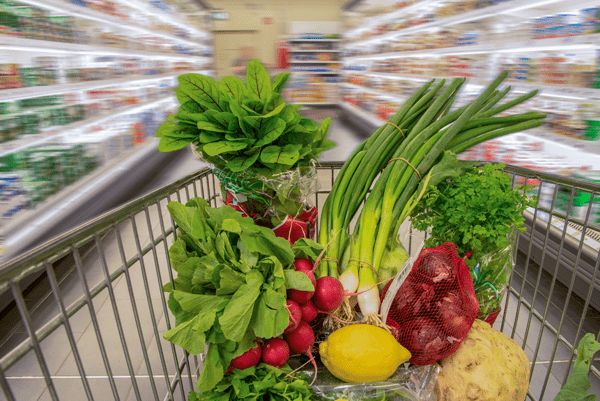

Navigating the Grocery Store
 Chances are, the unhealthier foods on your list are in the middle aisles, which are filled with tempting processed and packaged foods. The healthy, whole foods are usually located around the perimeter of the store.
Chances are, the unhealthier foods on your list are in the middle aisles, which are filled with tempting processed and packaged foods. The healthy, whole foods are usually located around the perimeter of the store.
Did you know that the path you follow in the grocery store could help you create a healthier life? I am going to help you navigate the store so you can avoid all of the strategic pitfalls that are set in place to coax you into purchasing, I’m just going to go ahead and say it…CRAP. Sorry if that offended you, but sometimes you have to call it as you see it.
Shop when you’re not tired.
If you can swing it, morning is one of the best times to hit the grocery store. The day is young, your energy levels are high, and the aisles are empty. These are all good things for getting in there, checking items off your list, and getting out.
If you’re a night owl, late night shopping can have the same perks! Just be mindful that even if you feel awake, your body and brain might be tiring, and when that happens, they tend to crave fatty, sugary foods. Beware the junk food aisles!
Avoid Shopping while Hungry
Grocery shopping when you’re hungry is like walking through the mall in the middle of winter while wearing flip-flops. You’ll most likely walk away with a bagful of fuzzy socks and boots, just because you were cold and your brain said, “I need that.” Shopping while hungry can be devastating not only to the waistline but also the pocketbook. You will be more apt to make purchases that are enticing due to bright colored packaging or convenience. On the other hand, shopping with an over-loaded belly may prevent you from making necessary purchases that will help you later in the week.
Day of the Week to Shop
Pocketbook-wise, the best day of the week to go shopping is likely Wednesday since that’s the day grocery stores start their weekly discount and coupon programs. Your store may differ from mine, so ask your local grocery store what day they implement their weekly sales.
Shop the Perimeters of the Store
What I mean when I say to shop the perimeter of a grocery store is that as you go into the store, that is where you’ll find the items that are most conducive to helping you be successful with your health goals. Chances are, if you were to bump into me at the grocery store, you would find me somewhere on the outskirts of the store. I have been shopping this way for about ten years now.

Ok, now this is what I want you to do. Start in the produce section. Once you fill your buggy with fresh produce, work yourself around the perimeter of the store. If you need help or want some tips on how to shop for fresh produce, click (here).
Do your best to avoid the center aisles. IF you HAVE to go down any of these aisles, let’s say to get to the restroom, I need you to do the following; square up your buggy in front of you and plant your feet firmly on the ground shoulder width apart. Now, this is going to be a short, intense “run” so to ensure that you don’t sprain or pull anything, do a few stretches. Shake your arms and legs, place both hands on the handle of the buggy with a firm grip (but don’t white-knuckle it), put your game face on, scout the area for other shoppers or obstacles, take a deep breath, and RUN!!!
Whiz down those aisles so fast that all those overly-processed, chemically laced, boxed and canned foods become a blur in your peripheral vision! Once you make it to the other side of the store, stop, relax, take a deep breath, and smile that you have survived the Center of the Store (echo, echo, echo).
Now it’s time for a selfie! A photo finish! You made it to the other side victoriously! Snap that photo, Facebook it, Snapchat it, heck… Instagram that baby… you deserve it!
- Shop the perimeter of the grocery store where fresh foods like fruits, vegetables, dairy, meat, and fish are usually located. Avoid the center aisles where junk foods lurk.
- Choose “real” foods, such as 100% fruit juice or 100% whole-grain items with as little processing and as few additives as possible. If you want more salt or sugar, add it yourself.
- Stay clear of foods with cartoons on the label that are targeted to children. If you don’t want your kids eating junk foods, don’t have them in the house.
- Avoiding foods that contain more than five ingredients, artificial ingredients, or ingredients you can’t pronounce.
Do you avoid the middle aisles of the grocery store? How do you resist temptations at the grocery store?
© AmieSue.com